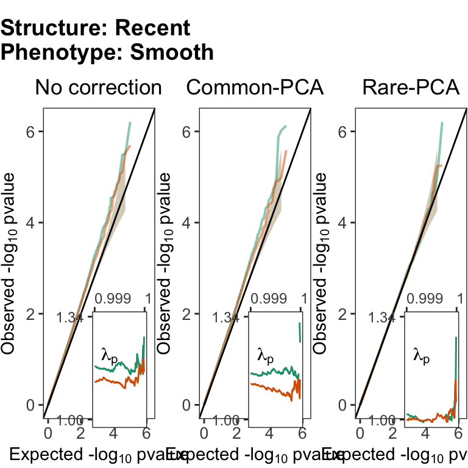
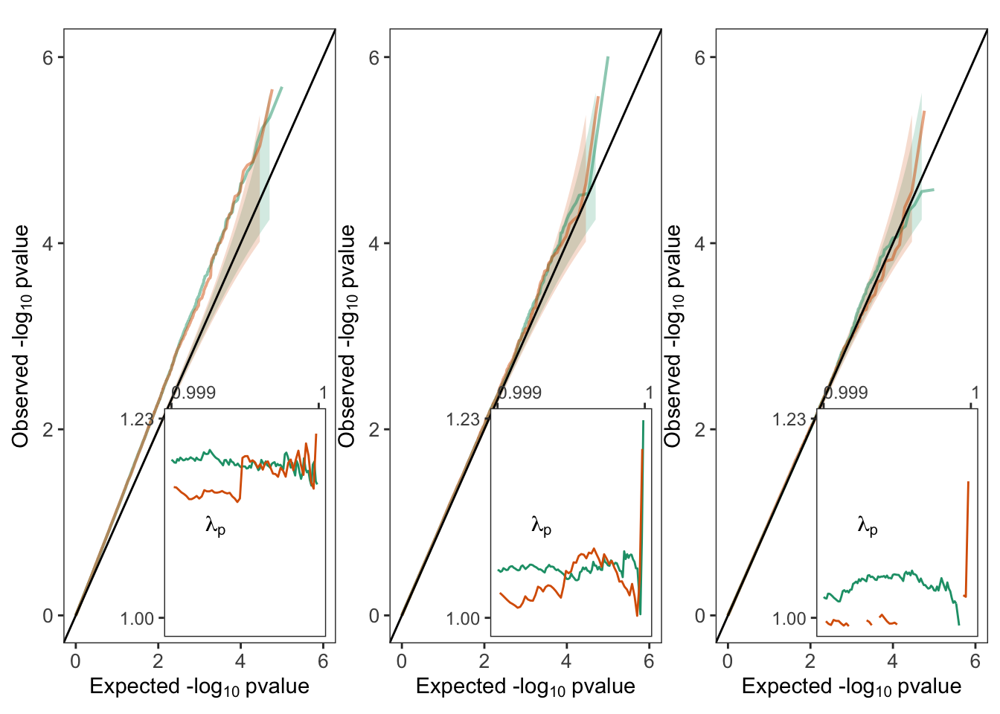

Last updated: 2020-12-22
Checks: 6 1
Knit directory: popstruct_scripts/
This reproducible R Markdown analysis was created with workflowr (version 1.6.2). The Checks tab describes the reproducibility checks that were applied when the results were created. The Past versions tab lists the development history.
The R Markdown is untracked by Git. To know which version of the R Markdown file created these results, you’ll want to first commit it to the Git repo. If you’re still working on the analysis, you can ignore this warning. When you’re finished, you can run wflow_publish to commit the R Markdown file and build the HTML.
Great job! The global environment was empty. Objects defined in the global environment can affect the analysis in your R Markdown file in unknown ways. For reproduciblity it’s best to always run the code in an empty environment.
The command set.seed(20201202) was run prior to running the code in the R Markdown file. Setting a seed ensures that any results that rely on randomness, e.g. subsampling or permutations, are reproducible.
Great job! Recording the operating system, R version, and package versions is critical for reproducibility.
Nice! There were no cached chunks for this analysis, so you can be confident that you successfully produced the results during this run.
Great job! Using relative paths to the files within your workflowr project makes it easier to run your code on other machines.
Great! You are using Git for version control. Tracking code development and connecting the code version to the results is critical for reproducibility.
The results in this page were generated with repository version 99813ec. See the Past versions tab to see a history of the changes made to the R Markdown and HTML files.
Note that you need to be careful to ensure that all relevant files for the analysis have been committed to Git prior to generating the results (you can use wflow_publish or wflow_git_commit). workflowr only checks the R Markdown file, but you know if there are other scripts or data files that it depends on. Below is the status of the Git repository when the results were generated:
Ignored files:
Ignored: .DS_Store
Ignored: .Rproj.user/
Ignored: Archived/
Ignored: analysis/.DS_Store
Ignored: burden_msprime/.DS_Store
Ignored: burden_msprime/generate_burden/.DS_Store
Ignored: data/.DS_Store
Ignored: data/burden_msprime/
Ignored: data/burden_msprime2/
Ignored: data/gwas/
Ignored: gwas/.DS_Store
Ignored: gwas/grid/.DS_Store
Ignored: gwas/grid/tau-9/.DS_Store
Ignored: gwas/grid/tau-9/scripts/.DS_Store
Ignored: gwas/grid/tau-9/scripts/generate_genotypes/.DS_Store
Ignored: gwas/grid/tau-9/scripts/gwas/.DS_Store
Ignored: gwas/grid/tau100/.DS_Store
Ignored: gwas/grid/tau100/scripts/.DS_Store
Ignored: gwas/grid/tau100/scripts/generate_genotypes/.DS_Store
Ignored: gwas/grid/tau100/scripts/gwas/.DS_Store
Ignored: gwas/ukb/.DS_Store
Ignored: gwas/ukb/scripts/.DS_Store
Ignored: optimize_migration_rate/.DS_Store
Ignored: optimize_migration_rate/complex_dem/.DS_Store
Ignored: optimize_migration_rate/grid/.DS_Store
Ignored: output/plots/
Ignored: pca_plots/.DS_Store
Ignored: prs/.DS_Store
Ignored: prs/grid/.DS_Store
Ignored: qqplots/.DS_Store
Ignored: qqplots/fixed_effects/.DS_Store
Ignored: qqplots/lmms/.DS_Store
Ignored: revisions/.DS_Store
Ignored: shared_scripts/gwas/
Ignored: shared_scripts/prs/
Ignored: shared_scripts/simphenotype/
Ignored: sib_analysis/.DS_Store
Ignored: sib_analysis/complex_dem/.DS_Store
Ignored: sib_analysis/grid/.DS_Store
Ignored: sib_analysis/grid/tau100/mates/
Ignored: simulating_genotypes/.DS_Store
Ignored: simulating_genotypes/grid/.DS_Store
Ignored: simulating_phenotypes/.DS_Store
Untracked files:
Untracked: analysis/figure/
Untracked: analysis/plt_burden_association.Rmd
Untracked: analysis/plt_burden_association_t100.nb.html
Untracked: analysis/plt_burden_association_t100_old.Rmd
Unstaged changes:
Modified: analysis/_site.yml
Modified: analysis/index.Rmd
Modified: burden_msprime/plt_burden_association_t100.Rmd
Modified: burden_msprime/plt_burden_association_t100.nb.html
Note that any generated files, e.g. HTML, png, CSS, etc., are not included in this status report because it is ok for generated content to have uncommitted changes.
There are no past versions. Publish this analysis with wflow_publish() to start tracking its development.
Here, I will be analyzing the inflation due to, and correction for, population structure in gene burden tests. I simulated 100,000 genes of length 7kb using msprime and aggregated the number of rare variants (MAF < 0.001) in the exons to calculate the burden per gene for each individual. Then, I carried out association between burden for each gene and the ‘Sharp’ and ‘Smooth’ phenotypes with no correction, correction using 100 common PCs, and correction using 100 rare PCs.
library(data.table)
library(ggplot2)
library(dplyr)
library(cowplot)
library(rprojroot)
library(tidyr)
library(patchwork)
F=is_rstudio_project$make_fix_file()Load the summary statistics from burden tests carried out under the recent structure model (\(\tau=100\)).
#rho = 0cM (genes with no recombination)
pburden1<-fread(F("data/burden_msprime2/association/bgwas_r0_t100_xall.txt.gz"))
#rho = 1cM
pburden2<-fread(F("data/burden_msprime2/association/bgwas_r1_t100_xall.txt.gz"))
colnames(pburden1) = colnames(pburden2) = c("seed","tree","smooth_pcs0","sharp_pcs0","smooth_cm","sharp_cm","smooth_re","sharp_re")
pburden1$rho = "rho1"
pburden2$rho = "rho2"
pburden = rbind(pburden1, pburden2)
mpburden<-melt(pburden,
id.vars=c("rho","seed","tree"),
value.name="pvalue",
variable.name="phenotype_correction")
mpburden<-mpburden%>%
separate(phenotype_correction,
into=c("phenotype","correction"))Calculate the observed and expected distribution of \(\chi^2\) and the genomic inflation factor, \(\lambda\).
#sort the summary stats by pvalue
mpburden=mpburden[order(pvalue),
.SD,
by=c("rho","phenotype","correction")]
#calculate the expected pvalue distribution (under a uniform distribution assumption)
mpburden[ , ix := 1:.N,
by=c("rho","phenotype","correction")]
mpburden[,exp.p:=ix/(max(ix)+1),
by=c("rho","phenotype","correction")]
mpburden[,chi.percentile:=1-exp.p]
#calculate observed chi square statistic from the pvalues
#needed to calculate lambda
mpburden[,"obs.chi":=qchisq(pvalue,df=1,lower.tail = FALSE), by=c("rho","phenotype","correction")]
#calculate expected chi square from the expected pvalues
mpburden[,"exp.chi":=qchisq(exp.p,df=1,lower.tail = FALSE)]
#calculate lambda
mpburden[,"lambda":=obs.chi/exp.chi]
#calculate the upper and lower confidence intervals of the expected pvalue
mpburden[,lower.ci:=qbeta(0.025,
shape1=ix,
shape2 = max(ix)-ix),
by=c("rho","phenotype","correction")]
mpburden[,upper.ci:=qbeta(0.975,
shape1=ix,
shape2 = max(ix)-ix),
by=c("rho","phenotype","correction")]
#reduce the number of points - for plotting
mpburden.red<-rbind(
mpburden%>%
group_by(rho, phenotype, correction)%>%
top_n(-1000,wt=pvalue),
mpburden%>%
group_by(rho, phenotype,correction)%>%
filter(row_number()%%10==0))%>%
ungroup()
mpburden.red=as.data.table(mpburden.red)
#labeling for the plot
mpburden.red = mpburden.red %>%
mutate(correction = case_when(correction == "pcs0" ~ "No correction",
correction == "cm" ~ "Common-PCA",
correction == "re" ~ "Rare-PCA"
))
#reorder levels
mpburden.red$correction = factor(mpburden.red$correction,
levels = c("No correction","Common-PCA","Rare-PCA"))Write function to generate QQplots with the \(\lambda\) distribution.
##function for plotting
fplt.burden=function(dat,
tit=element_blank()){
plt1<-ggplot(data=dat)+
geom_ribbon(aes(x=-log10(exp.p),
ymin=-log10(lower.ci),
ymax=-log10(upper.ci),
fill=rho),
alpha=0.2,
show.legend = FALSE)+
geom_line(aes(-log10(exp.p),
-log10(pvalue),
color=rho),
size=0.7,
alpha=0.5,
show.legend = FALSE)+
geom_abline(intercept=0,slope=1,color="black")+
scale_color_manual(values=c("#1b9e77","#d95f02"))+
scale_fill_manual(values=c("#1b9e77","#d95f02"))+
theme_bw()+
theme(panel.grid=element_blank(),
axis.text=element_text(size=10),
plot.title = element_text(hjust=0.5),
plot.background = element_blank(),
plot.margin = unit(rep(0.5,4), "pt"))+
labs(color="Freq.",
x = bquote("Expected -lo"*g[10]~"pvalue"),
y = bquote("Observed -lo"*g[10]~"pvalue"),
title=tit)+
xlim(c(0,max.log10P))+
ylim(c(0,max.log10P))
plt.inset=ggplot()+
geom_line(data=dat[chi.percentile>0.999,],
aes(chi.percentile,
lambda,
color=rho),
show.legend = FALSE,
size=0.5)+
annotate(geom="text",
x=0.9993,
y=0.9*max.lambda,
label="lambda[p]",parse=TRUE)+
theme_bw()+
theme(panel.grid.major.x = element_blank(),
legend.position="none",
axis.title=element_blank(),
panel.grid=element_blank(),
plot.background = element_blank(),
axis.text.x = element_text(hjust=0,size=9),
axis.text.y = element_text(size=9))+
scale_x_log10(limits=c(0.999,1),
breaks=c(0.999,1),
labels=c("0.999","1"),
position="top")+
scale_y_continuous(
limits=c(0.99,round(max.lambda,2)),
breaks=c(1,round(max.lambda,2)),
position="left")+
labs(x="p")+
scale_color_manual(values=c("#1b9e77","#d95f02"))
plt.wt.inset<-ggdraw(plt1) +
draw_plot(plt.inset, x=0.3, y=0.08, height=0.4,width=0.7)
return(plt.wt.inset)
}Generate QQplots for gene burden tests with the smooth phenotype under the recent structure model.
#split the data.frame by phenotype and correction so plot function can be applied separately to each combination
splt.mpburden.sm<-split(
mpburden.red[phenotype=="smooth",],
by="correction")
splt.mpburden.sm = splt.mpburden.sm[c("No correction","Common-PCA","Rare-PCA")]
#calculate max lambda so we can figure out the y-axis
max.lambda=max(sapply(
splt.mpburden.sm,
function(x){
max( x[ which(x$chi.percentile>0.9), "lambda"])}))
max.log10P=max(sapply( splt.mpburden.sm,
function(x){
max(-log10(x$pvalue),na.rm=TRUE)
}))
#plot for each combination of phenotype and correction
#smooth phenotype
plts=list()
for(i in 1:3) {
x=names(splt.mpburden.sm)[i]
df = splt.mpburden.sm[[x]]
#title = paste(pheno.name, corr.name, sep = ";")
plts[[i]] <- fplt.burden(df, tit = x)
}
names(plts)=names(splt.mpburden.sm)
#arrange plots in a grid
plts.sm = plot_grid(plts[[1]], plts[[2]], plts[[3]],
ncol = 3,
nrow = 1)
title <- ggdraw() +
draw_label(
"Structure: Recent \nPhenotype: Smooth",
fontface = 'bold',
x = 0,
hjust = 0
)
#add common plot title
plts.sm = plot_grid(title, plts.sm,
ncol = 1, nrow = 2,
rel_heights = c(0.2,1))
plts.sm
Load the summary statistics from burden tests carried out under the recent structure model (\(\tau=100\)), and calculate the expected and observed p-value distribution and the \(\lambda\) distribution.
pburden1<-fread(F("data/burden_msprime2/association/bgwas_r0_t9_xall.txt.gz"))
pburden2<-fread(F("data/burden_msprime2/association/bgwas_r1_t9_x1_579.txt.gz"))
colnames(pburden1) = colnames(pburden2) = c("seed","tree","smooth_pcs0","sharp_pcs0","smooth_cm","sharp_cm","smooth_re","sharp_re")
pburden1$rho = "rho1"
pburden2$rho = "rho2"
pburden = rbind(pburden1, pburden2)
mpburden<-melt(pburden,
id.vars=c("rho","seed","tree"),
value.name="pvalue",
variable.name="phenotype_correction")
mpburden<-mpburden%>%
separate(phenotype_correction,
into=c("phenotype","correction"))
mpburden=mpburden[order(pvalue),
.SD,
by=c("rho","phenotype","correction")]
mpburden[ , ix := 1:.N,
by=c("rho","phenotype","correction")]
mpburden[,exp.p:=ix/(max(ix)+1),
by=c("rho","phenotype","correction")]
mpburden[,chi.percentile:=1-exp.p]
mpburden[,"obs.chi":=qchisq(pvalue,df=1,lower.tail = FALSE), by=c("rho","phenotype","correction")]
mpburden[,"exp.chi":=qchisq(exp.p,df=1,lower.tail = FALSE)]
mpburden[,"lambda":=obs.chi/exp.chi]
mpburden[,lower.ci:=qbeta(0.025,
shape1=ix,
shape2 = max(ix)-ix),
by=c("rho","phenotype","correction")]
mpburden[,upper.ci:=qbeta(0.975,
shape1=ix,
shape2 = max(ix)-ix),
by=c("rho","phenotype","correction")]
mpburden.red<-rbind(
mpburden%>%
group_by(rho, phenotype, correction)%>%
top_n(-1000,wt=pvalue),
mpburden%>%
group_by(rho, phenotype,correction)%>%
filter(row_number()%%10==0))%>%
ungroup()
mpburden.red=as.data.table(mpburden.red)Generate QQplots for gene burden associaion tests with the the smooth phenotype.
splt.mpburden.sm<-split(
mpburden.red[phenotype=="smooth",],
by="correction")
max.lambda=max(sapply(
splt.mpburden.sm,
function(x){
max( x[ which(x$chi.percentile>0.9), "lambda"])}))
max.log10P=max(sapply( splt.mpburden.sm,
function(x){
max(-log10(x$pvalue),na.rm=TRUE)
}))
plts=list()
for(i in 1:3) {
x=names(splt.mpburden.sm)[i]
df = splt.mpburden.sm[[x]]
#title = paste(pheno.name, corr.name, sep = ";")
plts[[i]] <- fplt.burden(df)
}Warning: Removed 2 row(s) containing missing values (geom_path).
Warning: Removed 2 row(s) containing missing values (geom_path).
Warning: Removed 2 row(s) containing missing values (geom_path).Warning: Removed 7 row(s) containing missing values (geom_path).names(plts)=names(splt.mpburden.sm)
plts.sm = plts$pcs0 + plts$cm + plts$re
plts.sm